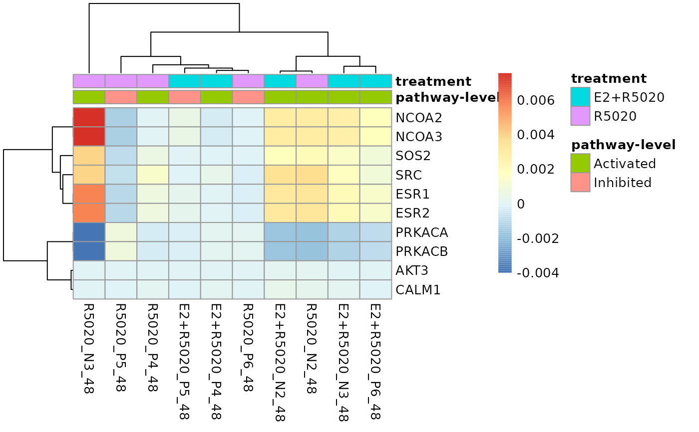
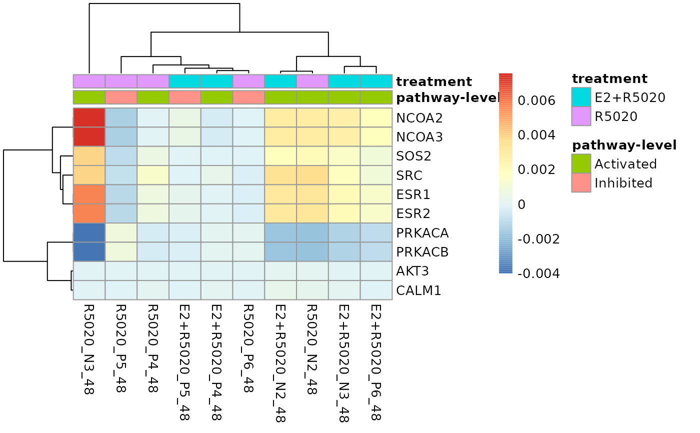

Plot genes' contribution to a specific pathway's perturbation as heatmap
Source:R/plot_gene_contribution.R
plot_gene_contribution.RdPlot genes' contribution to a specific pathway's perturbation as heatmap
plot_gene_contribution(
genePertMatr,
mapEntrezID = NULL,
topGene = 10,
filterBy = c("mean", "variance"),
annotation_df = NULL,
...
)Arguments
- genePertMatr
A matrix of gene-wise perturbation scores corresponding to a pathway. An element of the output generated using function
raw_gene_pert()- mapEntrezID
Optional. A
data.framematching genes' entrez IDs to another identifier with preferred labels. Must contain the columns:"entrezid"and"mapTo"- topGene
Numeric(1). The number of top genes to plot
- filterBy
Filter top genes by the mean or the variance of gene-wise perturbation scores
- annotation_df
A
data.framefor annotating heatmap columns. Must contain a "sample" column with sample names matching to the column names of thegenePertMatr- ...
Used to pass various potting parameters to
pheatmap::pheatmap()
Details
The single-sample pathway-level perturbation score for a given pathway is derived from aggregating all the gene-wise perturbation scores of genes in that pathway. This function visualises individual pathway genes' perturbation scores as a heatmap to demonstrate pathway genes' contribution to a pathway perturbation.
Plotting of the heatmap is done through pheatmap::pheatmap() so all plotting
parameters accepted by pheatmap::pheatmap() could also be passed to this function.
References
Kolde R (2019). pheatmap: Pretty Heatmaps. R package version 1.0.12, https://CRAN.R-project.org/package=pheatmap.
Examples
#compute weighted single sample logFCs
data(metadata_example)
data(logCPM_example)
metadata_example <- dplyr::mutate(metadata_example, treatment = factor(
treatment, levels = c("Vehicle", "E2+R5020", "R5020")))
# compute single-sample logFCs for all treated samples
ls <- weight_ss_fc(logCPM_example, metadata = metadata_example,
groupBy = "patient", treatColumn = "treatment", sampleColumn = "sample")
# extract all the KEGG pathways
gsTopology <- retrieve_topology(database = "kegg", species = "hsapiens")
# compute raw gene-wise perturbation scores
genePertScore <- raw_gene_pert(ls$logFC, gsTopology)
# sum gene-wise perturbation scores to derive the pathway-level single-sample perturbation scores
pathwayPertScore <- pathway_pert(genePertScore)
# Genes with top 10 mean absolute gene-wise perturbation scores in the
# Estrogen signaling pathway was visualised.
plot_gene_contribution(genePertScore$`kegg.Estrogen signaling pathway`,
filterBy = "mean", topGene = 10)
 # Columns of the heatmap could be annotated by the pathway-level perturbation
# and treatments. Firstly, create a `data.frame` with the two annotation
# attributes and sample names matching the column names of the perturbation
# score matrix.
annotation_df <- dplyr::select(metadata_example, sample, treatment)
pathwayLevel <- dplyr::filter(pathwayPertScore,
gs_name == "kegg.Estrogen signaling pathway")
pathwayLevel$`pathway-level` <- ifelse(
pathwayLevel$score > 0, "Activated", "Inhibited")
annotation_df <- dplyr::left_join(
dplyr::select(pathwayLevel, sample, `pathway-level`),
annotation_df, unmatched = "drop")
#> Joining with `by = join_by(sample)`
# To make the gene labels more informative, also map genes' entrez id
# to chosen identifiers.
load(system.file("extdata", "entrez2name.rda", package = "sSNAPPY"))
plot_gene_contribution(genePertScore$`kegg.Estrogen signaling pathway`,
topGene = 10, filterBy = "mean", annotation_df = annotation_df,
mapEntrezID = entrez2name)

# Plotting parameters accepted by `pheatmap::pheatmap()` could be passed to
# this function to customise the plot. For example, changin the color of annotations
plot_gene_contribution(genePertScore$`kegg.Estrogen signaling pathway`,
topGene = 10, filterBy = "mean", annotation_df = annotation_df,
mapEntrezID = entrez2name, annotation_colors = list(
treatment = c(R5020 = "black", `E2+R5020` = "white"),
`pathway-level` = c(Activated = "darkred", Inhibited = "lightskyblue")))
# Columns of the heatmap could be annotated by the pathway-level perturbation
# and treatments. Firstly, create a `data.frame` with the two annotation
# attributes and sample names matching the column names of the perturbation
# score matrix.
annotation_df <- dplyr::select(metadata_example, sample, treatment)
pathwayLevel <- dplyr::filter(pathwayPertScore,
gs_name == "kegg.Estrogen signaling pathway")
pathwayLevel$`pathway-level` <- ifelse(
pathwayLevel$score > 0, "Activated", "Inhibited")
annotation_df <- dplyr::left_join(
dplyr::select(pathwayLevel, sample, `pathway-level`),
annotation_df, unmatched = "drop")
#> Joining with `by = join_by(sample)`
# To make the gene labels more informative, also map genes' entrez id
# to chosen identifiers.
load(system.file("extdata", "entrez2name.rda", package = "sSNAPPY"))
plot_gene_contribution(genePertScore$`kegg.Estrogen signaling pathway`,
topGene = 10, filterBy = "mean", annotation_df = annotation_df,
mapEntrezID = entrez2name)

# Plotting parameters accepted by `pheatmap::pheatmap()` could be passed to
# this function to customise the plot. For example, changin the color of annotations
plot_gene_contribution(genePertScore$`kegg.Estrogen signaling pathway`,
topGene = 10, filterBy = "mean", annotation_df = annotation_df,
mapEntrezID = entrez2name, annotation_colors = list(
treatment = c(R5020 = "black", `E2+R5020` = "white"),
`pathway-level` = c(Activated = "darkred", Inhibited = "lightskyblue")))